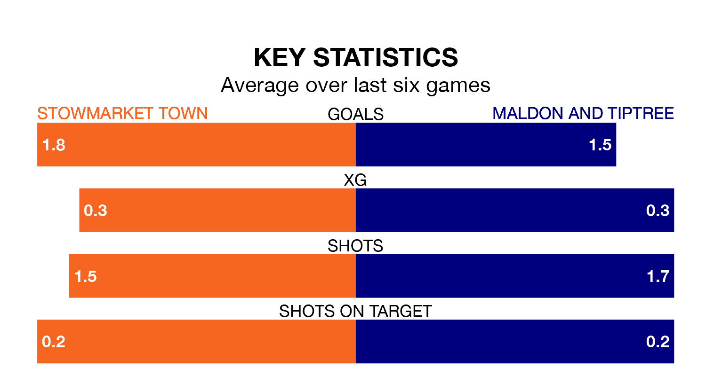

Stowmarket Town are on a terrible run ahead of hosting Maldon and Tiptree on Saturday, with just one point collected from their last six games.
Stowmarket have picked up just one draw in their last six Isthmian League Division One – North games, and face a Jammers side whose last six games have brought four wins and two losses.
Stowmarket are bottom of the table after 24 games, of which they have won none and drawn four, earning four points.
Maldon & Tiptree are 12 places ahead of Town in eighth, with 12 wins and three draws putting them on 39 points.
With 25 goals in 24 games so far this season, the home team are scoring at below the league average rate with 1.0 goals per game. And they are conceding more than average, letting in 77 goals at a rate of 3.2 per game.
The Jammers, meanwhile, are above average scorers, with 2.0 goals per game, compared to a league average of 1.7. They have conceded 1.6 goals per game.
In the last five years, Stowmarket and Maldon & Tiptree have played each other on five occasions. Stowmarket won three of them and Maldon & Tiptree two.
On average, Stowmarket scored 1.6 goals and the Jammers 2.0 in those matches.
Their last meeting was on October 28, when Maldon & Tiptree won 5-1 at home.
Stowmarket's last match was on February 3, a 3-1 loss against Bowers and Pitsea.
Maldon & Tiptree beat Enfield 1893 1-0 last time out, also on February 3.
Updated: 10:08 (UTC), 23/02/24